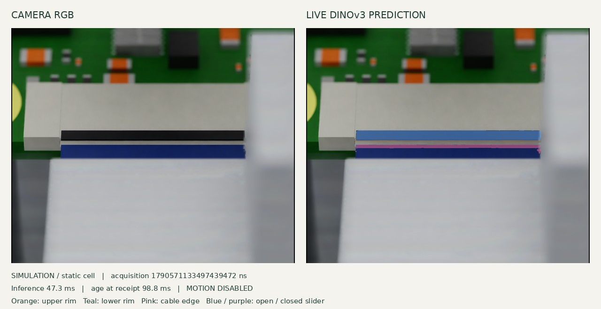
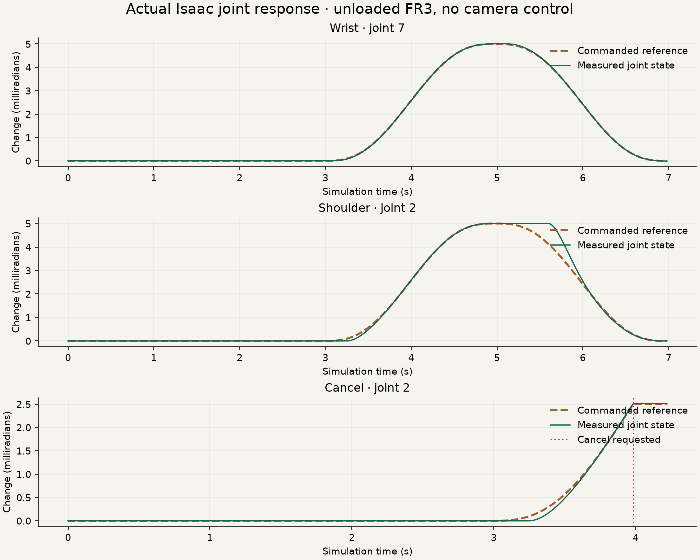

SIMULATION DEMONSTRATION
Seeing the opening.
Before making contact.
A ribbon cable must meet a very small entrance. This demo shows the camera and learned perception working together, and the checks that reject an observation we can no longer trust.
At the connector

Connecting. A recorded frame is shown until live data arrives.
NO ACTUATOR ENDPOINTDownload the recorded fallback
The colored overlay contains learned pixel classes. It is not a verified 3D pose or a motion target.
Acquire
Native macro RGB and matching calibration. Preserve the camera’s acquisition time.
Prepare
Rectify, resize and pad. Keep the full field of view and transform the intrinsics.
Recognize
Frozen DINOv3 plus a trained head separate entrance rims, cable edge and slider.
Check
Verify camera rig, model identity and freshness again before publishing features.
A FIVE-MINUTE WALKTHROUGH
What to show.
What to say.
Use the whole-cell view for orientation, then return to the close-up. The recorded fallback is an actual recording of the live perception path, with acquisition times preserved.
- The physical task
“We want an FR3 to pick up a loose camera ribbon cable and insert it sideways into a Raspberry Pi connector. First, it must see the actual entrance.”
- The sensing path
“The runtime receives RGB and fixed camera calibration. Simulator labels are reserved for offline training and scoring. The live model does not read the cable or board pose.”
- The learned features
“Orange and teal mark the entrance rims; pink marks the cable leading band. Blue and purple represent open and closed slider classes. These predictions can be wrong.”
- The failure boundary
“We test missing or shifted camera transforms, malformed messages and delayed inference. An expired result is dropped. A changed rig requires a reviewed restart.”
- The next skill
“Now we need a measured cable-to-mouth frame with uncertainty, then qualified contact mechanics and visual/contact control. This demo does not yet demonstrate insertion.”
INDEPENDENT OFFLINE TEST
60 fresh scenes.
One frozen model.
The mounted-camera test reached 91.0% pooled upper-rim overlap and 92.8% cable-edge overlap. The provisional slider decision was correct in 47 of 48 visible views. One wrong decision remains visible in the review.
Inspect every held-out scene →For the live connection
The ROS test mask matches the frozen offline result exactly. Fault tests reject wrong calibration, missing or changed camera transforms, truncated input and results that exceed the 500 ms acquisition deadline.
The static renderer runs at roughly 1.2 fps. Valid predictions therefore alternate with expired intervals. We show the age instead of hiding those gaps.
Read the integration evidence →ISAAC SIM · MOTION COMMISSIONING
Small steps. A measured stop.
The official unloaded FR3 now passes a 0.005 rad (0.29°) wrist probe, a shoulder probe, and a mid-move cancellation to hold. These videos show actual Isaac physics and joint-drive motion. This separate test scene has no cable or PCB, and the camera model does not control these moves.
Shoulder move and return
7,003 audited physics steps; 175 recorded frames. Final maximum joint error: 0.00000582 rad. The movement is deliberately small.
Cancel midway and hold
Measured post-cancel excursion below 0.00000716 rad in this one unloaded simulation. This is not a hardware protective-stop guarantee.

The first test failed its settling check and remains in the experiment record. Corrected trials use explicit Z-up coordinates and the earlier PGS solver profile. Camera-driven alignment and full-cell clearance remain separate gates.
NEXT MILESTONE · IMAGE GEOMETRY
From colored pixels to fitted edges.
The new estimator measures projected cable-to-entrance separation and relative tilt. It produced measurements in 35 of the 60 previously inspected scenes, abstained in all 24 absent-target or hidden-tip cases, and rejected one fragmented near-entry view. This is a retrospective diagnostic, not a new independent test.
Median edge errors against separately projected authored geometry were 0.4–0.6 pixels. The worst accepted rim error was 4.7 pixels. Low fit residuals therefore do not establish calibrated uncertainty or insertion clearance. Distances remain in pixels; angles remain in the image plane.
Independent static scenes, one per second; not robot motion.
Solid colored lines come from predicted masks. Dashed white lines are authored projections available only to the offline scorer; they can include hidden geometry. The runtime estimator receives no such lines or object poses.